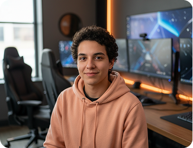

MEET YOUR PARTY
Guides who know the boss fight
Built by meditation teachers, game designers, and people who have absolutely rage-quit.

Mara cheng
MINDFULNESS LEAD
Breathwork teacher, support main, and maker of the 90-second queue reset.

Dev Okafor
GAME DESIGNER
Turns behavioral science into quests that feel human, useful, and never preachy.
